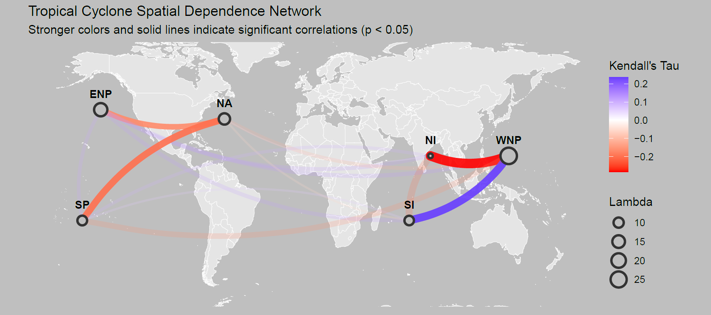

PhD Dissertation · Ongoing
Copula-Based Multi-Series Dependency Framework for Count Time Series Data (Tropical Cyclone (Hurricane) Counts)
Advisor: Dr. Norou Diawara · Old Dominion University
Developing a novel statistical framework for dispersed, over/under-dispersed time-series count data using the copula technique. The model integrates structural change-point detection and directed acyclic graphs (DAG) to map the interdependence across count time series (e.g., for tropical cyclone counts to map the interdependence in the Atlantic, Pacific, and Indian Ocean basins. Applied to decades of global hurricane data from the IBTrACS (International Best Track Archive for Climate Stewardship)).
Dataset
IBTrACS: Global, Decadal
Core Methods
Copulas · DAG · Change-Points
Data Type
Count Data · Time Series Data
